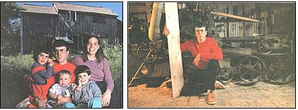

(PHOTOGRAPHS BY BROWNIE HARRIS)
It takes ingenuity and persistence for a young family with three small children to build their own home. Right: One way that the Masons economized was by cutting most of their lumber with a portable saw mill.